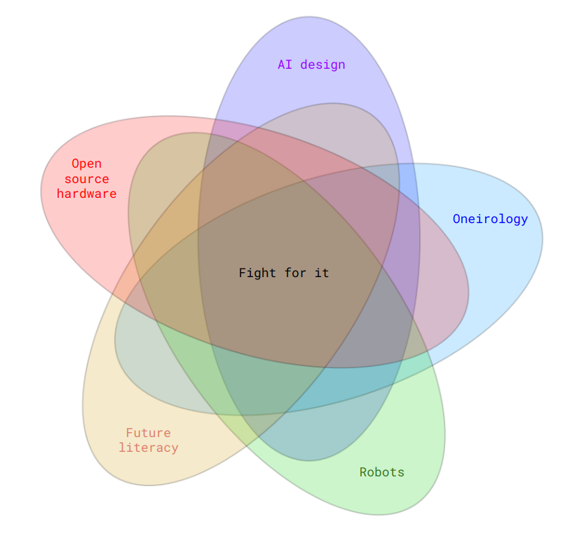

home
Tsunday walked out of her living quarters onto a foggy clover field fringed with some royal spinach descendent. She hopped onto her bicycle, and pedaled towards the forest garden, with Yoli tailing gently latched to the back spoke. The fields were calm, warmed in the smooth glow of the stars. Soa, Tsunday’s spacecraft, hummed with an enveloping fertility.